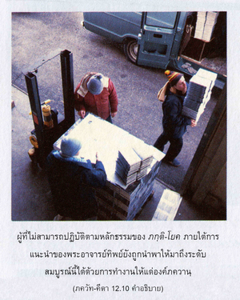
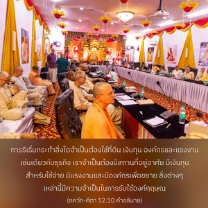

หากไม่สามารถปฏิบัติตามกฎเกณฑ์ของ ภกฺติ - โยค เธอก็พยายามทำงานให้แก่ข้า เพราะจากการทำงานให้ข้าเธอจะมาถึงระดับที่สมบูรณ์




ผู้ที่ไม่สามารถปฏิบัติตามหลักธรรมของ ภกฺติ-โยค ภายใต้การแนะนำของพระอาจารย์ทิพย์ ยังถูกนำพาให้มาถึงระดับสมบูรณ์นี้ได้ด้วยการทำงานให้แด่องค์ภควานฺ เราจะทำงานนี้ได้อย่างไรนั้น ได้อธิบายไว้แล้วในโศลกที่ห้าสิบห้าของบทที่สิบเอ็ด เราควรมีความเห็นใจในการเผยแพร่กฺฤษฺณจิตสำนึก มีสาวกมากมายปฏิบัติตนในการเผยแพร่กฺฤษฺณจิตสำนึกซึ่งต้องการความช่วยเหลือ ดังนั้น แม้เราไม่สามารถปฏิบัติตามหลักธรรมของ ภกฺติ-โยค โดยตรงเราอาจพยายามช่วยงานนี้ได้ การริเริ่มกระทำสิ่งใดจำเป็นต้องใช้ที่ดิน เงินทุน องค์กร และแรงงาน เช่นเดียวกับธุรกิจ เราจำเป็นต้องมีสถานที่อยู่อาศัย มีเงินทุนสำหรับใช้จ่าย มีแรงงาน และมีองค์กรเพื่อขยาย สิ่งต่างๆ เหล่านี้มีความจำเป็นในการรับใช้องค์กฺฤษฺณ ข้อแตกต่างก็คือในลัทธิวัตถุนิยมงานทำไปเพื่อสนองประสาทสัมผัส อย่างไรก็ดี งานที่คล้ายกันนี้สามารถกระทำได้เพื่อความพึงพอพระทัยขององค์กฺฤษฺณ และนั่นคือกิจกรรมทิพย์ หากมีเงินเพียงพอเราสามารถช่วยก่อสร้างสำนักงาน หรือสร้างวัดเพื่อเผยแพร่กฺฤษฺณจิตสำนึก หรืออาจช่วยในการพิมพ์หนังสือ ยังมีกิจกรรมอื่นๆ อีกมากมายที่น่าสนใจ หากเราไม่สามารถสละผลของกิจกรรม เราก็สามารถสละบางส่วนเพื่อเผยแพร่กฺฤษฺณจิตสำนึก การอาสาสมัครรับใช้เพื่อกฺฤษฺณจิตสำนึกนี้จะช่วยให้เราเจริญขึ้นไปถึงระดับแห่งความรักองค์ภควานฺที่สูงกว่า ซึ่งจะทำให้เราสมบูรณ์